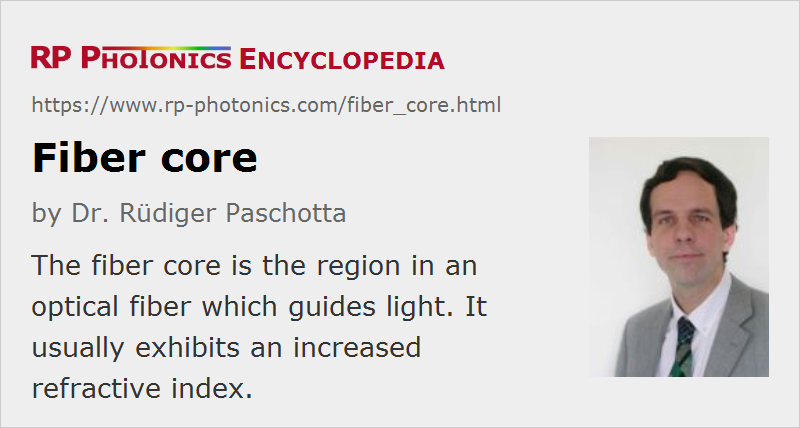

Fiber Core
Definition: the region in an optical fiber which guides light
German: Faserkern
Category: fiber optics and waveguides
How to cite the article; suggest additional literature
Author: Dr. Rüdiger Paschotta

The core of a fiber is the region in which the light is guided, i.e., it is responsible for the waveguiding effect. (The articles on fibers and waveguides explain more about the guiding properties.) Usually, the core is a region of slightly increased refractive index, obtained not by using an entirely different glass, but by doping the glass with some index-raising material. In the case of silica fibers, typical index-raising dopants are germania (GeO2, germanosilicate fibers), phosphorus pentoxide (P2O5, phosphosilicate), and alumina (Al2O3, aluminosilicate). Alternatively or in addition, the index of the cladding may be lowered e.g. by fluorine or boron oxide (B2O3) doping. Index-lowering agents can also be used in the core if other required dopants make the index difference too high.
Additional dopants are required for active fibers, i.e., for fibers which can be used for fiber amplifiers or lasers. In almost all cases, these dopants contain rare earth ions such as Er3+ (erbium), Yb3+ (ytterbium) or Nd3+ (neodymium). In addition to these ions, other ingredients are often used, e.g. for reducing quenching or photodarkening effects.
The waveguiding properties are determined by the refractive index profile, i.e., the increase in refractive index in the core relative to that of the cladding. For step-index profiles, the numerical aperture and the V number are frequently used parameters.
Although the fiber core is rotationally symmetrical for most fibers, there are methods to break this symmetry e.g. by using an elliptical core and/or by introducing asymmetric structures around the core. This can lead to strong birefringence (→ polarization-maintaining fibers) and even to polarization-dependent guidance (→ single-polarization fibers).
In addition to the waveguiding, the details of the core also influence other properties of a fiber:
- The uniformity and material purity of the core affects the fiber losses through scattering and absorption.
- In rare-earth-doped fibers, the chemical composition of the core determines the solubility of the dopant ions. Unfortunately, the solubility of pure silica for rare earth ions is poor. Significant improvements can be achieved e.g. by using aluminosilicate or phosphosilicate glasses instead of pure silica. These allow for high dopant concentrations without too strong clustering effects, which could cause quenching. The same holds for phosphate glass fibers.
- The maximum phonon energy of the glass material determines the potential for multi-phonon transitions and thus can have a strong influence on the lifetime of energy levels.
- The glass composition also influences the possibility of efficient energy transfer between different ions.
- The tendency of a fiber for photodarkening effects as well as the resistance against radiation damage (radiation-induced aging) is also strongly dependent on the chemical composition. Certain dopants (e.g. germania) have to be avoided in radiation-resistant fibers.
- The photosensitivity of the fiber core determines the potential for fabricating fiber Bragg gratings by irradiation with ultraviolet light.
Particularly for large mode area single-mode fibers, the exact refractive index profile can be important. For example, the frequently encountered effect that the center of the core exhibits a dip in the refractive index can be detrimental.
In most cases, the fiber core is located at the center of the fiber's cross-section, because this facilitates splicing, launching light, the use of fiber connectors and other fiber joints, etc. However, for double-clad fibers it can be very advantageous to use an off-centered core, because this can substantially improve the pump absorption. In rare cases, helical core fibers are used where the core winds around the fiber axis.
Note that there are also photonic bandgap fibers with a hollow core (→ hollow-core fibers), where the guiding is provided by a kind of Bragg reflection. Most fibers, however, are index-guiding.
Questions and Comments from Users
Here you can submit questions and comments. As far as they get accepted by the author, they will appear above this paragraph together with the author’s answer. The author will decide on acceptance based on certain criteria. Essentially, the issue must be of sufficiently broad interest.
Please do not enter personal data here; we would otherwise delete it soon. (See also our privacy declaration.) If you wish to receive personal feedback or consultancy from the author, please contact him e.g. via e-mail.
By submitting the information, you give your consent to the potential publication of your inputs on our website according to our rules. (If you later retract your consent, we will delete those inputs.) As your inputs are first reviewed by the author, they may be published with some delay.
See also: fibers, rare-earth-doped fibers, double-clad fibers, photonic bandgap fibers, hollow-core fibers, doping concentration
and other articles in the category fiber optics and waveguides
|  |
If you like this page, please share the link with your friends and colleagues, e.g. via social media:
These sharing buttons are implemented in a privacy-friendly way!